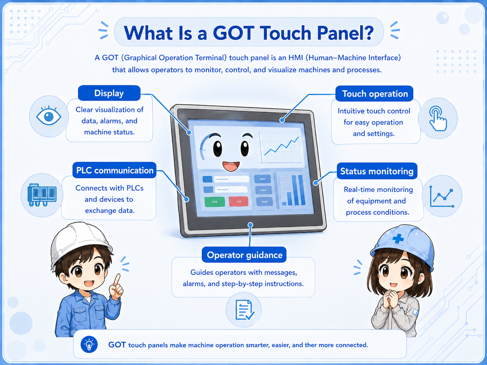
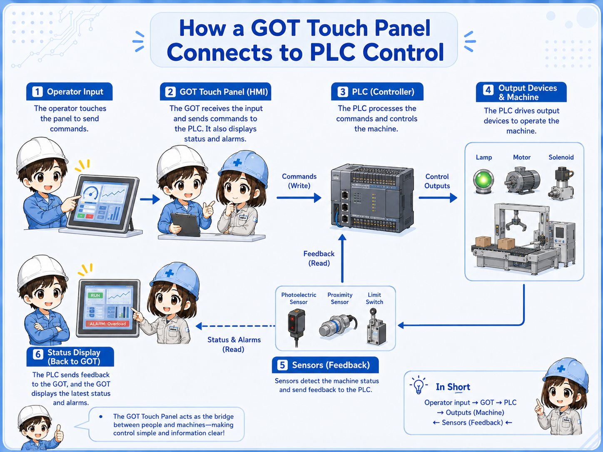
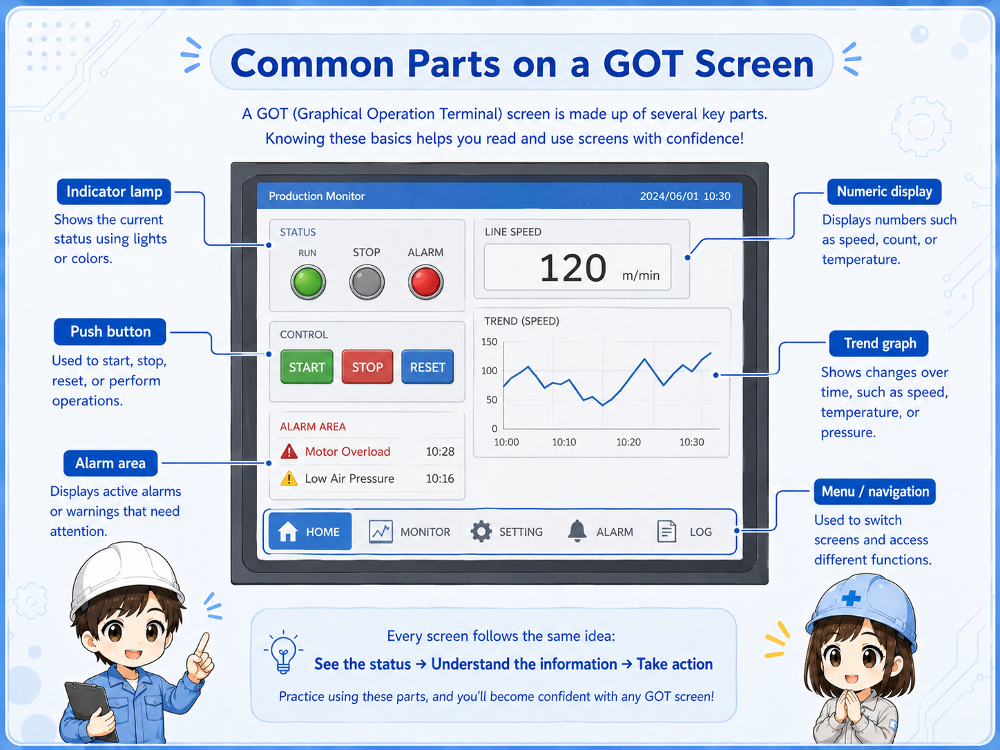
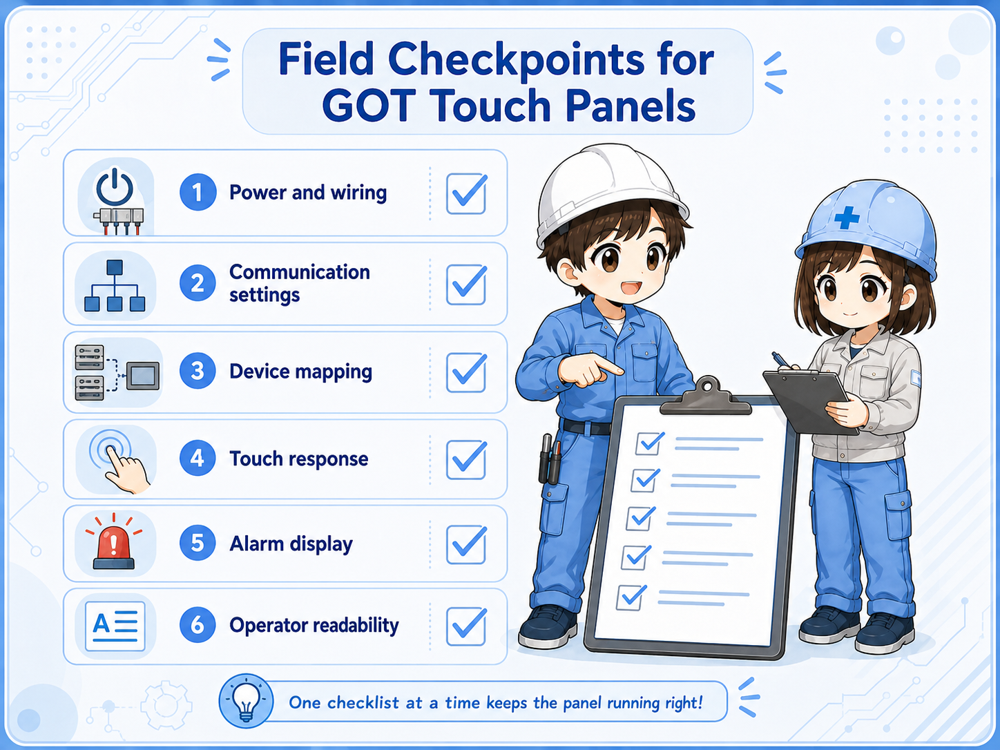

What is a GOT or HMI touch panel?
A touch panel is the place where the operator sees machine status and sends simple commands. The PLC still controls the actual logic.
A GOT is Mitsubishi Electric’s operator terminal brand. More generally, this type of device is often called an HMI, or human-machine interface.
In a control system, the HMI screen usually does three things: it displays PLC information, lets the operator press on-screen switches, and helps show alarms or operating conditions.

Think of it as a window into the PLC
The screen can show a motor as running, an alarm as active, or a value as changing. But those indications come from PLC devices, field signals, communication, and the program behind the screen.
How a GOT screen connects to a PLC
The screen and PLC exchange data through communication. A screen object is linked to a PLC device or tag-like address.
A lamp on the screen may be linked to a bit device. A numerical display may be linked to a word device. A switch may write a bit or value back to the PLC.
This means the same field condition can be seen from different angles: the real sensor, the PLC input, the PLC internal logic, and the HMI object on the screen.
1. Field signal
A sensor, switch, relay contact, or device changes state.
2. PLC device
The PLC reads the input or stores the result in a device.
3. HMI object
A lamp, value, or alarm object reads that device.
4. Operator view
The operator sees status or sends a command from the screen.

Model-specific settings are not covered here
Communication method, cable type, driver selection, network settings, and device ranges differ by model and system. Check the official manual for the actual GOT, PLC, and connection method.
Common screen objects and what they mean
Most beginner screens are built from simple objects: lamps, switches, numerical displays, numerical inputs, and alarm displays.
| Screen object | Typical role | What to check in the PLC |
|---|---|---|
| Lamp | Shows ON/OFF status such as Run, Ready, or Alarm. | The linked bit device and the ladder condition driving it. |
| Switch | Lets the operator write a command or set a bit. | The write device, permissive conditions, and safety interlocks. |
| Numerical display | Shows a count, setting, speed, time, temperature, or other value. | The word device, scaling, unit, and data source. |
| Alarm display | Shows abnormal states or stored alarm messages. | The alarm trigger bit, reset condition, and actual cause in the field. |

Why device links matter
If the HMI object is linked to the wrong device, the screen can look correct but still mislead the operator.
For example, a lamp labeled Motor Running may look simple, but it depends on which PLC device it reads. It may show a command, a contactor feedback, an inverter running signal, or an internal status bit.
Those are different meanings. The screen label and the linked PLC device must match the real intention of the machine.

SeniorWhen a lamp is ON, do not stop at the screen. Ask what PLC device is turning that lamp ON.

JuniorSo a screen lamp and the actual field device are related, but they are not always the same check point.
Useful habit
When checking an HMI screen, write down the screen object, the linked device, the PLC logic around that device, and the field signal that should match it.
Field checks when the screen does not match the machine
A mismatch may come from the screen object, PLC logic, communication, field wiring, or the actual device.
1. Check the label meaning
Confirm whether the screen label means command, ready, running, feedback, alarm, or completion.
2. Check the linked device
Find which PLC device the object reads or writes. Do not assume it from the label alone.
3. Check PLC logic
Look at the conditions that turn the linked bit or value ON, OFF, or change its number.
4. Check field feedback
Compare the screen with real I/O, sensors, relays, contactors, drives, or other field devices.

Common beginner mistakes
The screen is easy to see, so it is easy to trust too much. The real cause may be one layer behind it.
- Thinking the HMI controls everything: The HMI usually sends commands or displays data. The PLC program and field circuits still decide the actual operation.
- Trusting a screen label without checking the device: A label such as Run, Stop, Ready, or Alarm must be checked against the linked PLC device.
- Changing a screen object without checking the ladder: A screen edit may hide the symptom, but it does not fix the logic or field cause.
- Ignoring communication settings: If communication is wrong, the screen may show old values, errors, or no data.
- Using one article as a model-specific manual: Actual settings differ by GOT model, PLC series, network, and project configuration.
Do not bypass safety logic from the screen
Never use an HMI switch to bypass interlocks, emergency stops, safety devices, or machine protection logic unless the system design and official procedures explicitly allow it.
Summary
A GOT or HMI touch panel is a practical screen for showing machine status and sending operator commands. But the screen is only one layer of the control system.
To understand it correctly, connect the screen object, PLC device, PLC logic, communication, and field signal as one chain.
For actual projects, always check the official manuals for the GOT model, PLC series, connection method, and software version used on the machine.